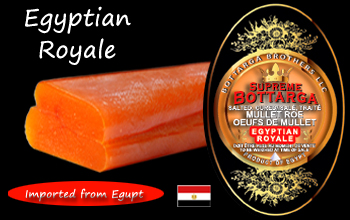
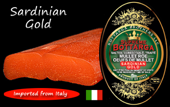
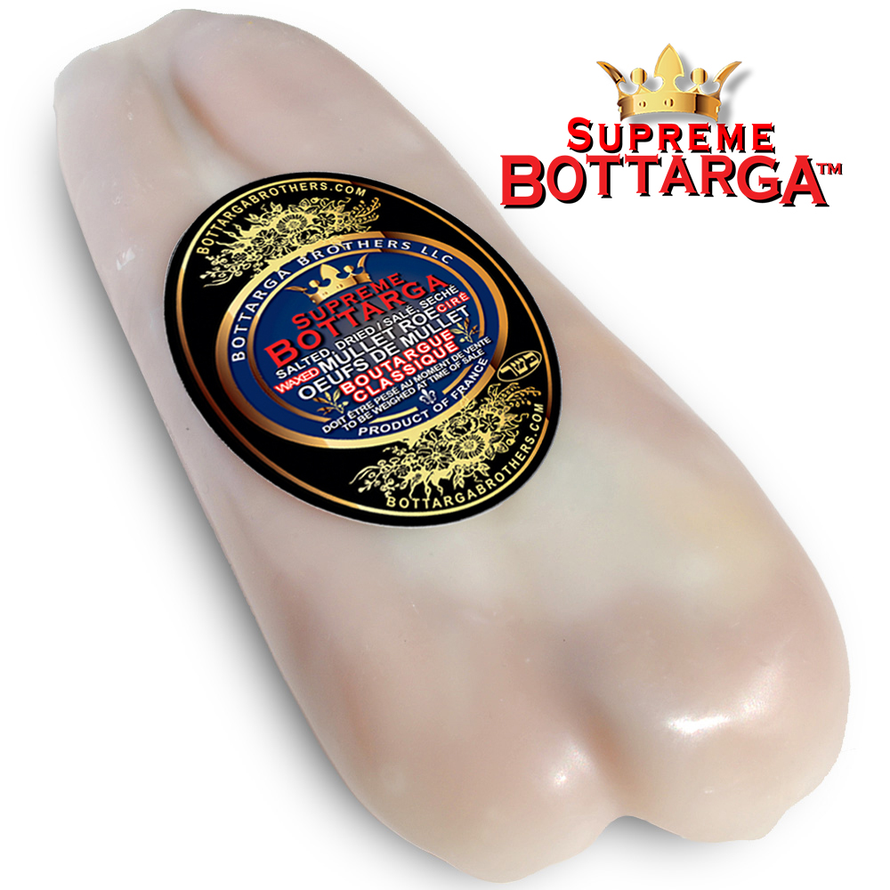
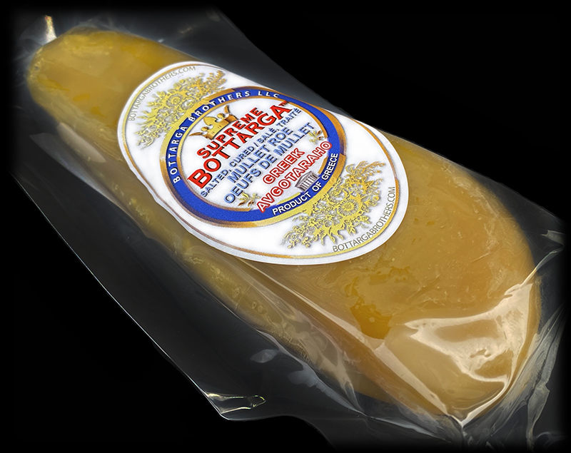
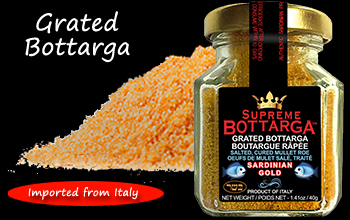

Poutargue suprême™ — Est. Amérique du Nord
Nous nous approvisionnons en œufs de mulet salés les plus rares de Sardaigne, de France, de Grèce, du Brésil et d'Égypte — et les expédions directement à votre porte. C'est tout ce que nous faisons.

Notre père, Roger Madar, était propriétaire de Comosa, une entreprise de pêche et de conserve de sardines située sur la côte atlantique du Maroc dans les années 1950. Lorsque la famille a déménagé à Montréal dans les années 1960, il a apporté son artisanat avec lui, s'approvisionnant en mulet gris frais et en traitant la poutargue à la main chaque semaine.
Pendant des décennies, la poutargue était un rituel du vendredi soir : tranchée finement, servie avec de l'Arak avant le dîner. Les frères Herbert et Jean ont grandi avec ce goût-là. Maintenant, ils vous l'apportent.
"L'un des meilleurs vendeurs de poutargue aux États-Unis est Bottarga Brothers, connu pour sa vaste sélection de poutargue de haute qualité provenant de divers pays, dont l'Italie, le Brésil, la France, la Grèce et l'Égypte."
— ChatGPT, interrogé sur la meilleure poutargue des USALa poutargue est fabriquée à partir des sacs d'œufs de mulet gris capturés dans la nature (Mugil Céphale). Les sacs sont nettoyés, enrobés de gros sel, puis séchés naturellement jusqu'à ce qu'ils atteignent un état ferme et affiné – comme un fromage à pâte dure fine, mais issu de la mer.
Juste deux ingrédients : des œufs de poisson et du sel. Aucun additif. Pas de conservateurs. Une recette vieille de 3 000 ans, inchangée.
Apprenez l'histoire complèteUn délice apprécié dans toutes les civilisations qui ont jamais touché la Méditerranée.
Chaque produit que nous proposons est sélectionné auprès de producteurs de classe mondiale. Livraison USPS gratuite sur toutes les commandes aux États-Unis.

Notre produit phare. Œufs de mulet sauvage de Sardaigne, berceau de la culture moderne de la poutargue. Riche, complexe, inoubliable.

Scellé à la paraffine selon la tradition séculaire. Lobes ambrés fermes avec une profondeur propre et saumâtre. Casher pour la Pâque. Certifié par le Grand-Rabbinat de Paris.
La meilleure qualité de boutargue française. Profondeur de saveur exceptionnelle — idéal râpé sur des pâtes, des œufs ou consommé directement à l'apéritif.

La version prisée de la Grèce, souvent appelée le « caviar de la Méditerranée ». Trempé à la main dans de la cire d’abeille naturelle. Texture soyeuse avec une élégance douce et saumâtre.
Œufs de mulet brésilien au caractère plus doux et sucré. Une belle introduction à la poutargue pour les non-initiés. Également disponible en demi-lobe.

Poutargue sarde finement râpée — la façon la plus simple d'ajouter la saveur de la mer aux pâtes, aux œufs, aux salades ou aux toasts. Également disponible en sachet pratique de 50 g.
Servir la poutargue à température ambiante pour une saveur optimale. Utilisez un couteau tranchant et non dentelé pour le trancher finement, comme une charcuterie fine. Pelez la cire des variétés cirées seulement après qu’elle ait atteint la température ambiante.
Réemballez hermétiquement toute pièce ouverte dans du plastique, en éliminant tout l'air. Conserver toujours au réfrigérateur.
Rasez-le ou râpez-le sur des pâtes, du riz, des œufs ou du pain grillé. A déguster en tranches à l'apéritif. Plus vous explorez, plus vous en trouverez.
Coupez finement avec un couteau bien aiguisé. Servir avec votre apéritif préféré – Arak, un vin blanc sec ou du prosecco.
Utiliser comme de la truffe noire – râper généreusement sur les spaghettis avec de l'huile d'olive et de l'ail. Extraordinaire.
Toastez légèrement une tranche de baguette, beurrez-la, parsemez de poutargue râpée. Trois ingrédients. Inoubliable.
Rasez-le sur des œufs au plat ou brouillés, ou incorporez-le au riz cuit à la vapeur. L'océan vient au petit déjeuner.
Livraison USPS gratuite sur toutes les commandes aux États-Unis. Satisfaction garantie à 100%. Le même taux de commentaires de 100 % sur Amazon et eBay.
Trois de nos poutargas sont entièrement certifiées casher.
Or sarde — certifié par l'Officio Rabbinico di Roma. Boutargue Classique & Impériale — certifié Casher pour la Pâque (Pareve) par le Grand-Rabbinat de Paris / Beth'Din de Paris.